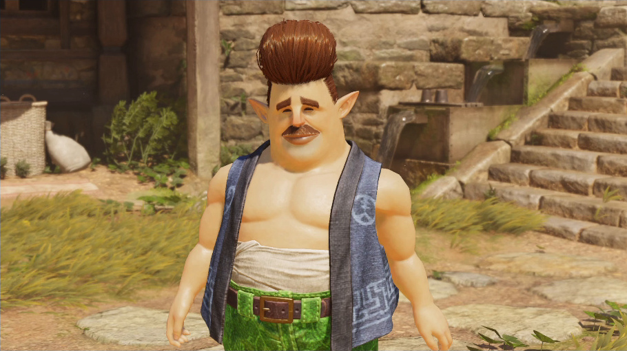
Hiro.

Jibo.

Julio.

Nico.
Les trois pierres ancestrales sont la clé de la terre sacrée.
Ganondorf compte donner les Gorons à manger au dragon maléfique.

Hiro.
Jibo.
Julio.
Nico.
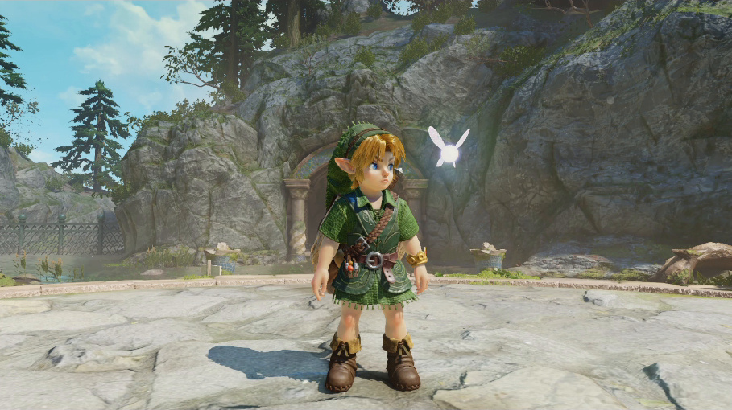
Le héros s'appelle Link.

La déesse rouge s'appelle Din. Elle est la déesse de la force. Elle créa le sol et la terre d'Hyrule.

La déesse verte s'appelle Farore. Elle est la déesse du courage. Elle apporte la vie en Hyrule.

La déesse bleue s'appelle Nayru. Elle est la déesse de la sagesse. Elle apporte l'ordre en Hyrule.

Le sage de l'eau est Ruto.
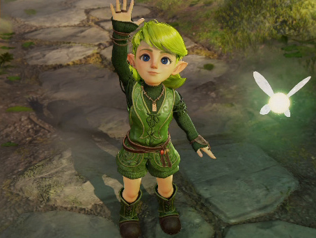
La fille aux cheveux verts est Saria.
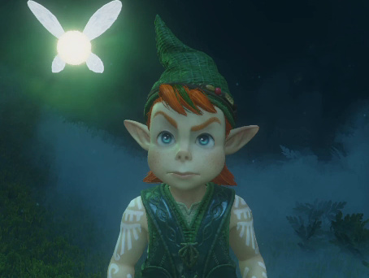
La garçon aux cheveux roux est Mido.
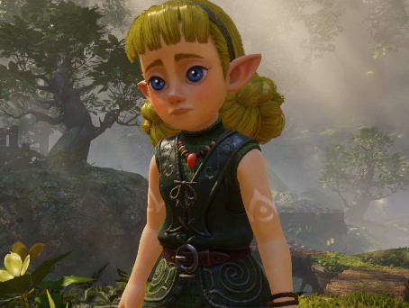
La fille aux cheveux blonds est Fado.
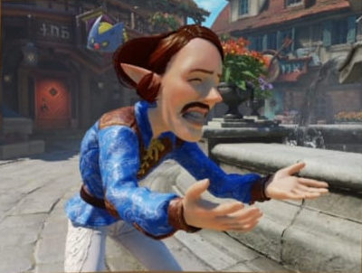
C'est à cause de l'homme en bleu qui rit sur la place de la citadelle que la sécurité du château d'Hyrule a dû être renforcée.
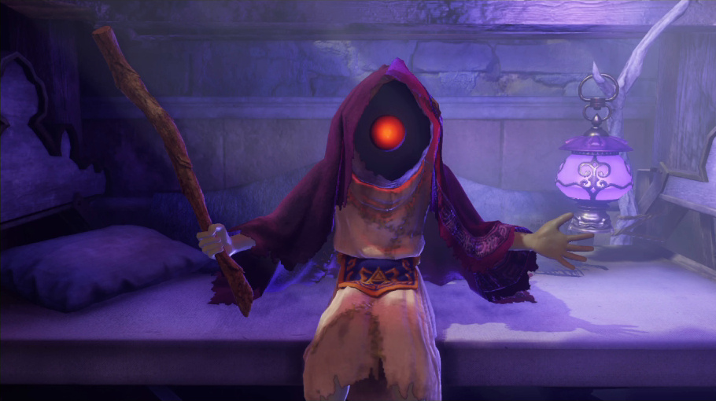
Le marchand d'âmes vit à la citadelle d'Hyrule.

Une pelle est gravé sur la tombe d'Igor.
Ils reposent dans le cimetière du village Cocorico.

Le fantôme rouge s'appelle Jo.

Le fantôme bleu s'appelle Beth.
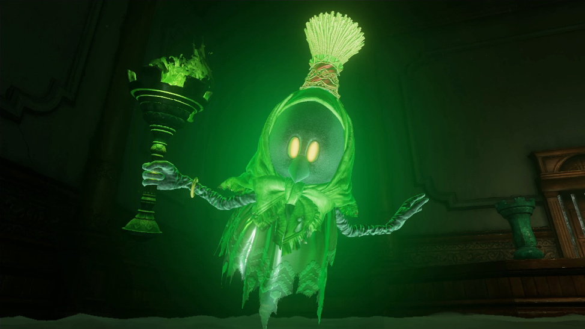
Le fantôme vert s'appelle Amy.

Le fantôme violet s'appelle Meg.
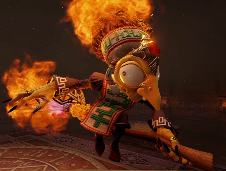
Koume manie le feu. Elle est l'une des mères adoptives de Ganondorf.
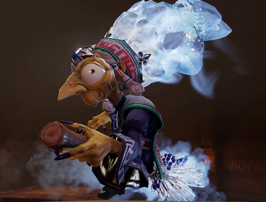
Kotake manie la glace. Elle est l'une des mères adoptives de Ganondorf.
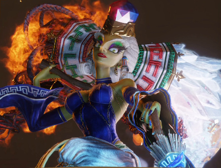
Twinrova est la double fusion maléfique de Koume et Kotake.

Un Armos a un bouclier.
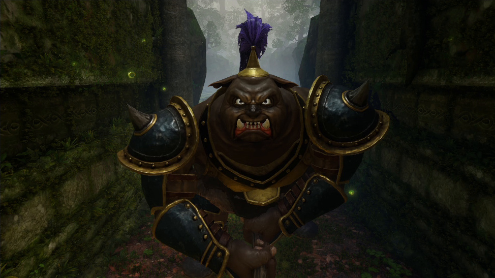
Le Grand Moblin a une masse mais pas de bouclier.
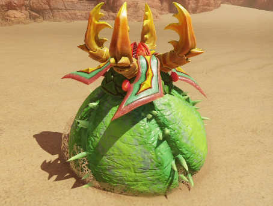
Le Leever ne se déplace que sur le sable.

Une Tetdoss a des ailes et peut être de couleur rouge, verte, bleue ou blanche.
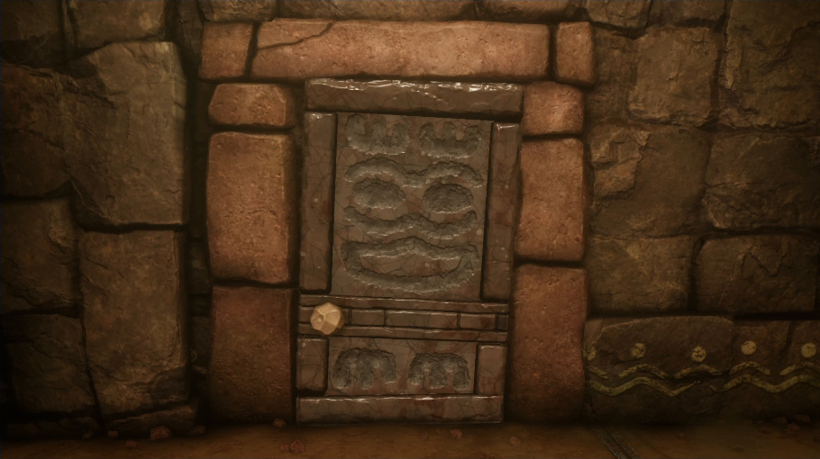
Une porte tordue et qui n'est pas dans son tour de porte est un ennemi.
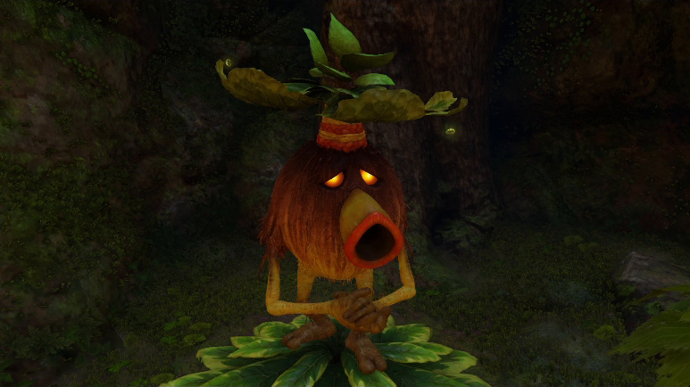
Seule la Peste Marchande vend des fragments de cœur..

Bémol est le frère cadet. Son chapeau est ornée d'une lune.

Dièse est le frère aîné. Son chapeau est ornée d'un soleil.

Il y a 2 endroits où l'on peut trouver des Skull Kid dans les Bois perdus. Ils donnent 200 rubis quand ils sont éliminés.
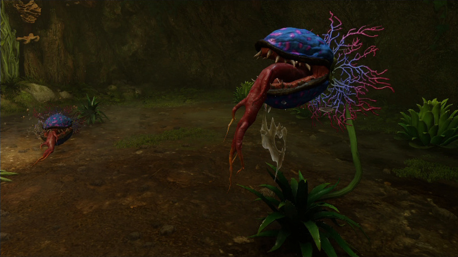
Éliminer une Baba Mojo en la tranchant donne un bâton Mojo. Éliminer une Baba Mojo en la frappant à la tête donne une noix Mojo.
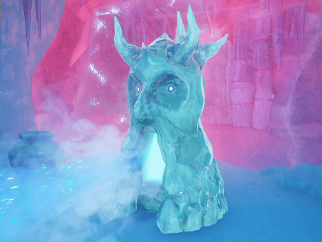
Le Freezard est fait de glace.

Le prix d'un cœur de vie est 5 rubis.

Le prix d'un Esprit est 200 rubis.

Le prix d'une flamme bleue est 200 rubis.

Le prix d'une fée est 50 rubis.

Le prix d'une potion bleue est 100 rubis. Elle n'est vendu que par Mémé l'apothicaire.

Les habits du héros ont été béni par Rauru.

Le prix d'une tunique goron est 600 rubis. Elle s'achète dans la boutique Goron et est donnée par le goron Link.

Le prix d'une tunique zora est 600 rubis. Elle s'achète dans la boutique Zora et est donnée par le roi Zora.

Les bombes coûtent moins cher à la boutique Goron. Elles permettent de faire exploser les rochers marrons.

Les Noix Mojo étourdissent les ennemis.

Les masques ne s'achètent pas, ils se louent.

Le 1er masque qui se loue est le masque de Keaton, qui vaut 10 rubis et est vendu 15 rubis à un garde.

Le 2e masque qui se loue est le masque de mort, qui vaut 20 rubis et est vendu 10 rubis à Skull Kid.

Le 3e masque qui se loue est le masque d'Effroi, qui vaut 30 rubis et est vendu 30 rubis à l'enfant du cimetière.

Le 4e masque qui se loue est le masque du lapin, qui vaut 50 rubis et est vendu 200 rubis au coureur de la plaine d'Hyrule.

Le masque avec un œil Sheikah s'appelle le masque de vérité.

Un rubis vert vaut 1 rubis.

Un rubis bleu vaut 5 rubis.

Un rubis rouge vaut 20 rubis.

Un rubis violet vaut 50 rubis.

Un rubis dorée vaut 200 rubis.

Don de ....

Don de magie double.

Don de ....

Le certificat s'échange contre l'épée Biggoron.

Le sac avec un bâton en contient 10.

Le sac avec trois bâtons en contient 20.

Le sac avec plein de bâtons en contient 30.

Le sac vert contient des noix Mojo.

Le sac rouge contient des graines Mojo.

Le sac bleu contient des bombes.

Le carquois avec une flèche en contient 30.

Le carquois avec deux flèches en contient 40.

Le carquois avec trois flèches en contient 50.

La bourse avec un rubis blanc en contient 200.

La bourse avec un rubis bleu en contient 500.

La bourse avec un rubis jaune en contient 1000.

Il faut 4 fragments de cœur pour avoir un cœur supplémentaire.
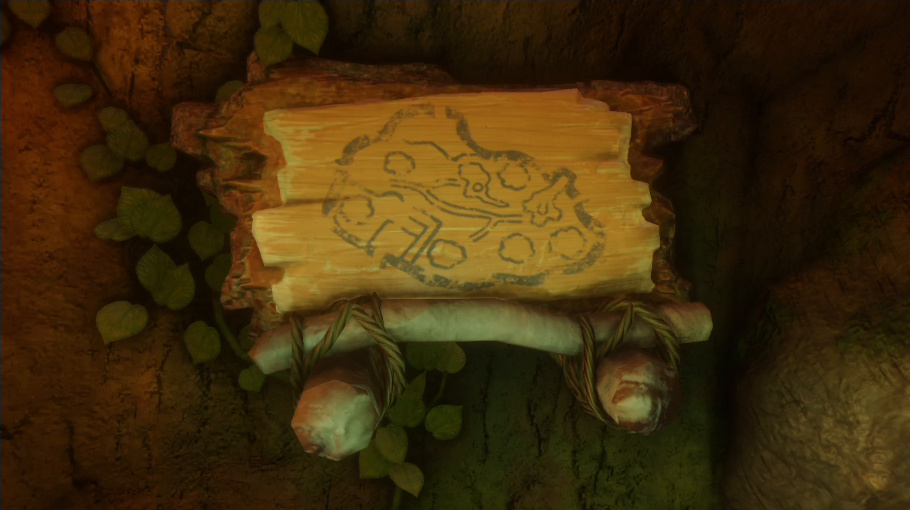
Il y a une carte de la forêt Kokiri gravé sur du bois dans la maison des frères Je-Sais-Tout.
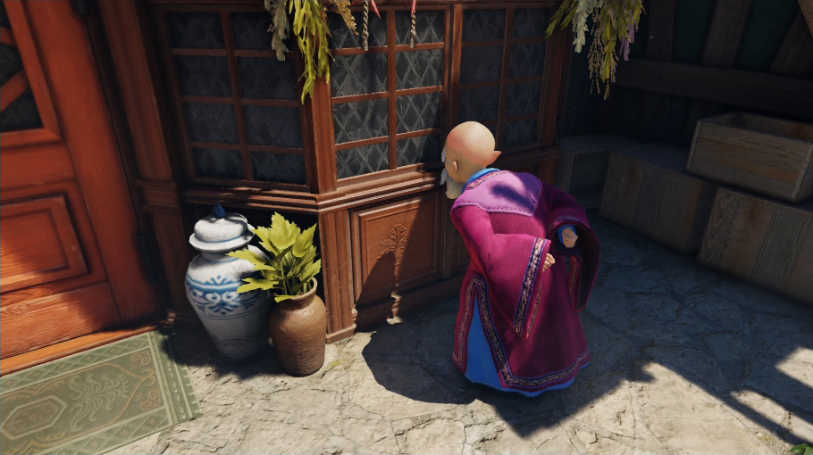
Il s'agit de la boutique de potions.
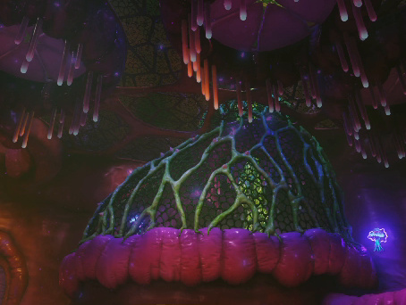
Cette chair se trouve à l'intérieur de Jabu-Jabu.
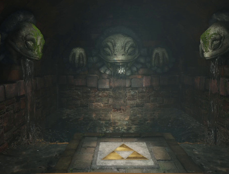
Cette statue se trouve dans le puits.
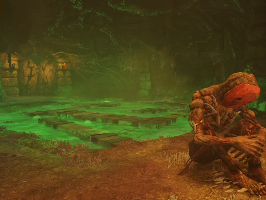
Ce lac d'acide se trouve dans le puits.
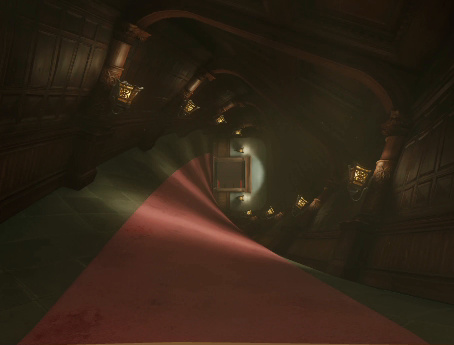
Ce couloir tordu se trouve dans le temple de la Forêt.
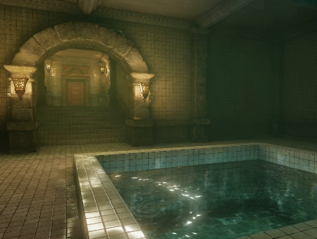
Cette piscine se trouve dans le temple de la Forêt.
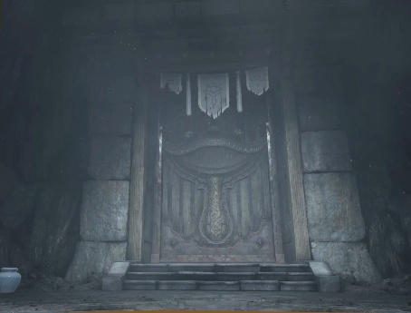
Cette porte se trouve dans le temple de l'Ombre.
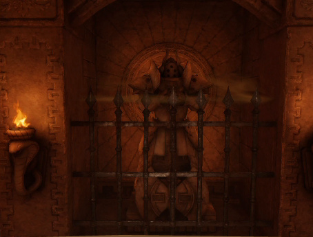
Cette statue se trouve dans le temple de l'Esprit.
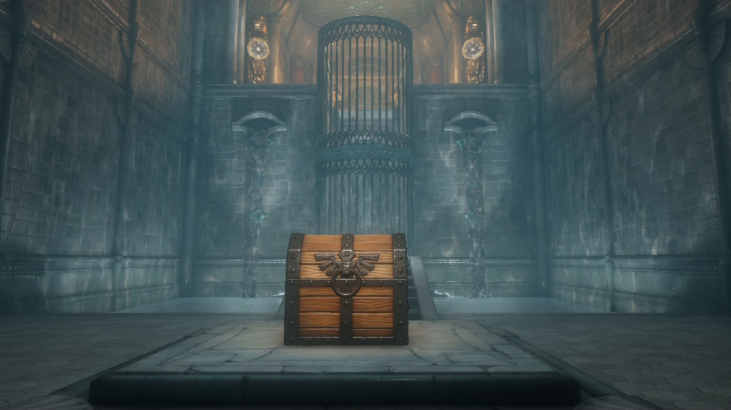
Ce coffre contient le super grappin.
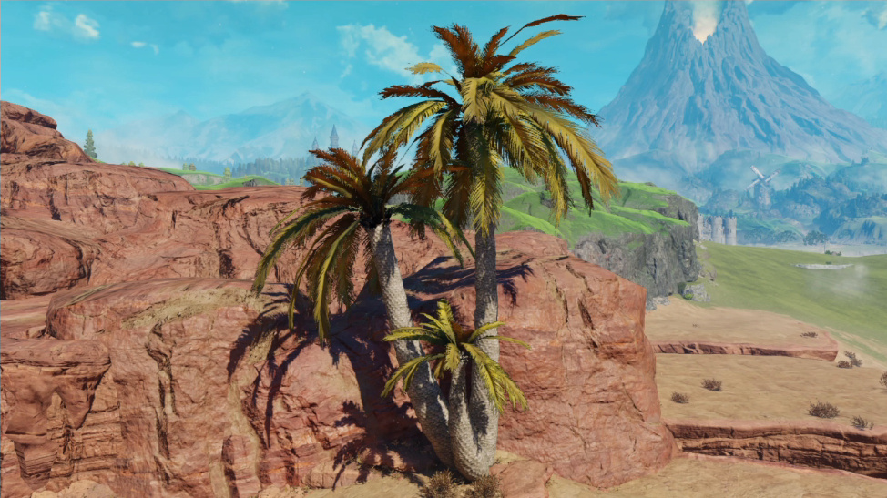
Ces palmiers se situent dans la vallée Gerudo.
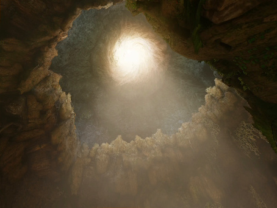
Cette lumière se trouve au fond d'une grotte.
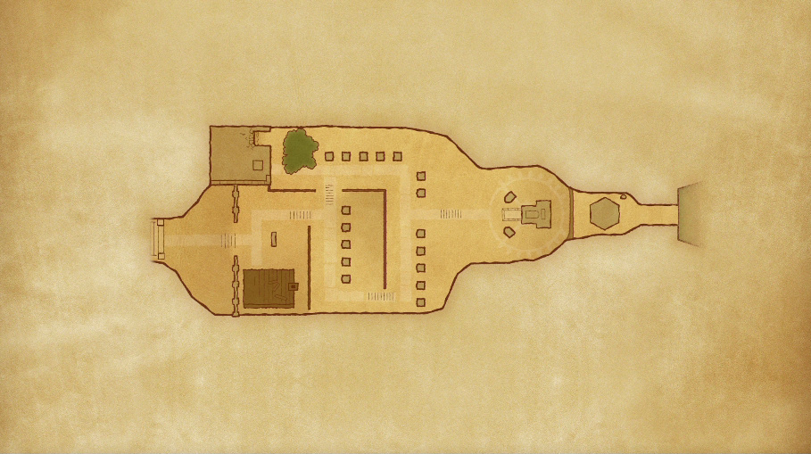
Il s'agit de la carte du cimetière du village de Cocorico.
L'icône du bowling teigneux est une cible avec un missile teigneux.
L'icône de la boutique de missiles teigneux est un missile teigneux.
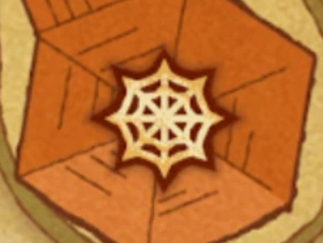
L'icône de la maison des Skulltulas d'or est une toile d'araignée.
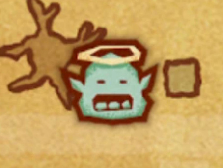
L'icône de l'excursion du fossoyeur est la tête d'Igor.
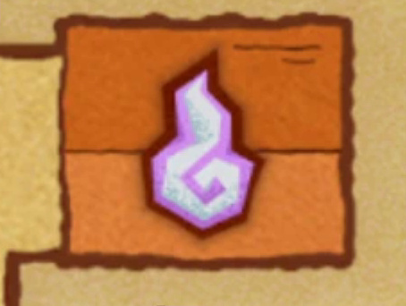
L'icône du marchand d'âme est un esprit.
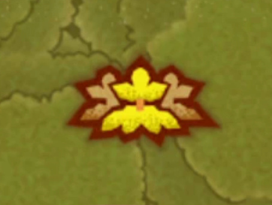
L'icône du théâtre Mojo est trois pestes Mojo.

Ce symbole est celui de la forêt.

Ce symbole est celui du feu.

Ce symbole est celui de l'eau.

Ce symbole est celui de l'ombre.

Ce symbole est celui de l'esprit.

Ce symbole est celui de la lumière.
L'archerie montée se trouve dans la vallée Gerudo. Elle n'ouvre que le jour. Y participer coûte 30 rubis. Il faut amener son cheval et son arc, mais les flèches sont fournis.
Entrer au Gymnase Gerudo coûte 30 rubis.
La partition de la Berceuse de Zelda est YXAYXA.
La partition du Boléro du feu est RLRLARAR.